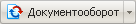
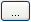

Создание документа в системе документооборота возможно двумя способами: через Панель управления и через выбор команды Создать страницу в Меню команд кнопки . В обоих случаях откроется одна и та же форма создания нового документа, практически полностью идентичная форме Редактирования документа. Исключение составляет одно дополнительное поле.
| Поле
| Описание
|
|---|---|
| Шаблон | Выбор одной из форм шаблона страницы:
|
Изменение документа через документооборот возможно двум способами: через Панель управления и через кнопку на панели Редактирование.
| Кнопка | Описание |
|---|---|
| Список документов
| Переход на страницу со списком документов. |
| Создать новый документ
| Переход к созданию нового документа в режиме документооборота. |
| Удалить текущий документ
| Удаление редактируемого документа. |
Предназначена для редактирования самого документа.
| Поле | Описание |
|---|---|
| Статус | Статус документа.
|
| Создан, Изменен, Блокирован
| История создания и редактирования документа
|
| *Полное имя файла | Полное имя файла (с указанием пути). При указании полного пути к файлу на сервере вам необходимо учесть, что вы должны иметь как минимум право Документооборот на указанную вами директорию. Путь к файлу можно указать с помощью кнопки , расположенной правее. |
| Заголовок | Заголовок документа. |
| Выбор режима редактирования
| Режим создания и редактирования документа.
|
| поле редактирования
| Поле, где собственно происходит редактирование документа. |
Для использования изображений, а также каких-либо других файлов, вам необходимо загрузить их в документ. Рекомендуется указывать имя файла без пути, тогда файл будет загружен в ту директорию, в которой находится файл редактируемого документа.
Загруженные в документ файлы можно просмотреть, скачать, либо удалить их из документа. В теле документа можно использовать как относительные пути к загруженным файлам, так и абсолютные. Помимо загруженных в документ, у вас есть возможность указать ссылки на любые файлы, расположенные на сервере.
| Поле | Описание | |||
|---|---|---|---|---|
| Информация об уже загруженных файлах. | ||||
| ID | Уникальный идентификатор загруженного файла. | |||
| Имя | Имя файла. | |||
| Размер | Размер файла | |||
| Загружен | Дата и время загрузки файла в документ. | |||
| Кем | Пользователь, выполнивший загрузку файла. | |||
| Уд. | Для того чтобы удалить файл, установите флаг в это поле и нажмите кнопку Применить. | |||
| Поля для загрузки файлов в документ. | ||||
| Имя файла на сервере | Имя, которое будет присвоено файлу после загрузки. | |||
| Имя локального файла | Имя загружаемого файла. Для выбора файла используйте кнопку Обзор. | |||
Служит для создания произвольного комментария к документу (например, по поводу перевода документа в другой статус). Комментарий не влияет на внешний вид документа.
| Кнопка | Описание |
|---|---|
| Сохранить | Сохранение документа. |
| Применить | Сохранение внесённых изменений. продолжение редактирования документа. |
| Отменить | Отмена внесённых изменений. Возврат первоначального состояния документа. |
| © «Битрикс», 2001-2008, «1C-Битрикс», 2008 | 1С-Битрикс: Управление сайтом |